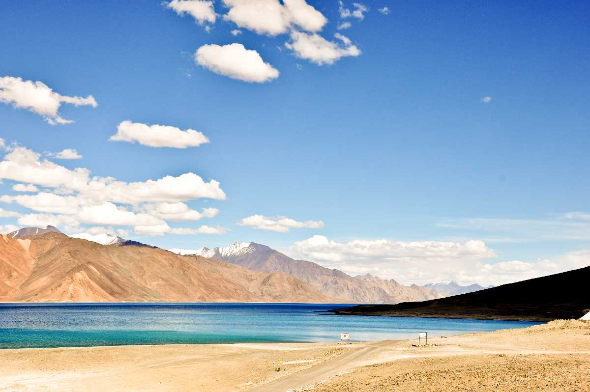
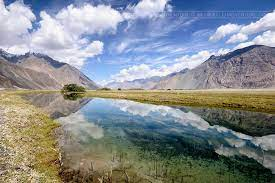
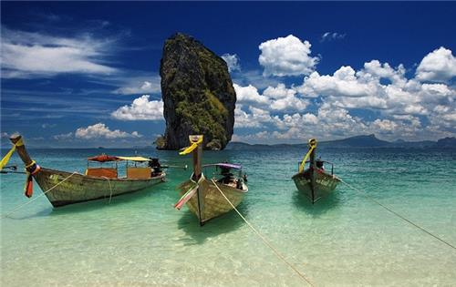

- Pangong Lake Ladakh
The most popular tourist attraction in Ladakh, Pangong lake is an
endorheic (landlocked) lake situated at 4350 meters. Also known as Pangong Tso
it is 12 kilometres long and extends from India to Tibet. Almost 60% of
Pangong Lake lies in the Tibetan Autonomous Region. A unique feature of
the lake is that it does not remain blue throughout the year or even the day,
rather it changes colours from azure to light blue to green and grey too! It is
famous amongst tourists as Ladakh lake, the spot where the Bollywood
movie "3 Idiots" was shot.
Since the enthralling Pangong Lake falls on the Sino-Indian Actual Line of
Control, an inner line permit is required to visit it. The Indian Nationals can
easily obtain individual permits while other foreign nationals need to obtain a
group permit, with at least 3 persons in the group, accompanied by an
accredited guide. The permit can be obtained at the tourist office in Leh, for
a small fee. Owing to its altitude, the Pangong Lake temperature ranges from
-5°C to 10°C as a result of which it freezes completely during winters in
spite of its salinity.

- Read More On Pangong Lake
-
Nubra Valley J&K
Nubra Valley lies in the union territory of Ladakh at a distance of around 140 Km
from Leh. Located on the ancient Silk Route, the valley has Shyok and Nubra rivers
snaking through it and some beautiful monasteries.
With arid mountains in the backdrop, Hundar in Nubra Valley is famous for the
Bactrian camel rides. Bactrian camels are of the rarest sort, having two
humps and were the primary source of transportation in the silk route. Diskit
Monastery in Nubra Valley is known for the 32 metre Maitreya Buddha statue
located near the monastery. There are a lot of activities like ATV rides and
ziplining in the Nubra Valley.
The region is currently under military supervision because the road further
leads to the Siachen base camp, which happens to be the highest battlefield
in the world. Most tourists travel to Nubra Valley from Leh through Khardung La.

- Rann Of Kutch
The Great Rann of Kutch, is a large area of salt marshland, is located in
the District of Kutch, in the western state of India, Gujarat. The vast expanse
is situated in the Thar Desert and is formed of salt marshes. Sunsets at
the Great Rann of Kutch are a treat to the eyes after exploring the region.
The region is divided into two parts, the Great Rann of Kutch and Little Rann
of Kutch and comprises of massive deposits of salt in the desert. These
deposits are known for producing a mirage, and many pilgrims have shared
stories about witnessing optical illusion that seem as good as real.
The region has been so famous for its natural beauty that it was featured in
numerous films in India, for example - Refugee, Magadheera, Goliyon Ki Raasleela
Ram Leela, Sarainodu etc. It has also been mentioned in several
books including the Booker Prize-Winning Novel, Midnight's Children, written
by Salman Rushdie. The name, Great Rann of Kutch, was derived from
the word "Rann" meaning desert in Hindi and the district it is located in. It is
considered as one of the largest salt deserts in the entire world.

- Neil Island,Andaman & Nicobar
Neill Island is a part of the South Andaman Administrative District and belongs to Ritchie’s
Archipelago in the Bay of Bengal. A part of the massive ocean separates it from Ross Island
and Havelock Island, Tourists visiting Havelock often make a day-long trip to Neill Island.
Perhaps the most endearing feature of this island is its three sandy beaches, namely
Bharatpur Beach, Sitapur Beach and Lakshmanpur Beach. The forest cover has reduced
considerably due to the cultivation of rice but a section in the north-west of the island is
being preserved actively.
The regions where the forest cover is lost has a couple of degrees or so higher temperature
than the region with enough flora. Nonetheless, Neill Island is the major supplier of
vegetables to most regions of the Andaman Islands.
Due to its limited area, Neill Island can be covered with a simple walk. All three beaches are
exquisite and extraordinarily clean and are well-connected to the mainland as well.
